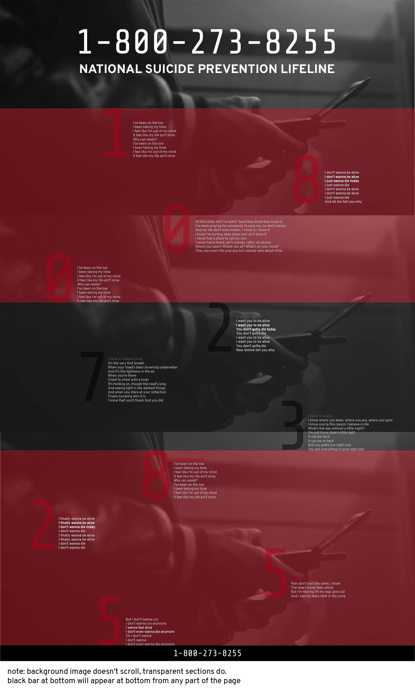
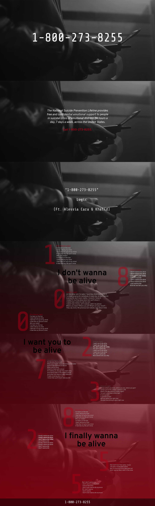

Original Mock-Up

Edits:
- Forgot to include artist's name
- Increase font size of lyrics
- Give the numbers some space from the edges
- Create more emphasis using size
- Create more moments where things stand out
- Give the progression of hopefulness more significance
(maybe big bolded lines in the background)
- Create a grid
(with enough columns so numbers can stay unaligned)
Edits made with Madeline Montoya and Sherry Xu
Revised Mock-Up
